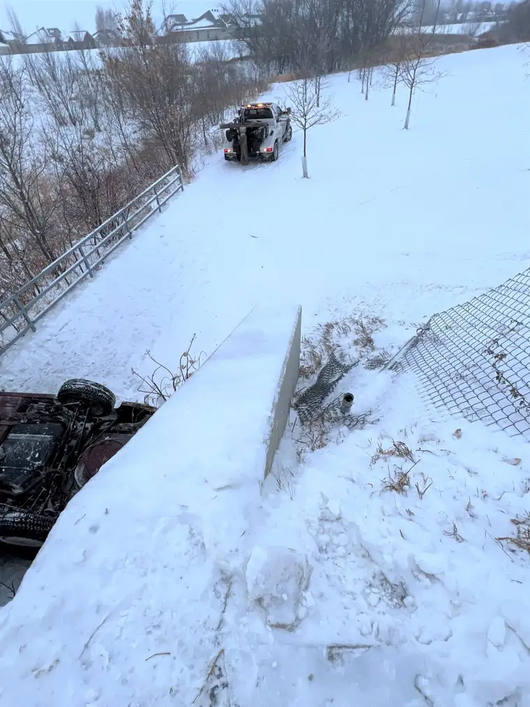
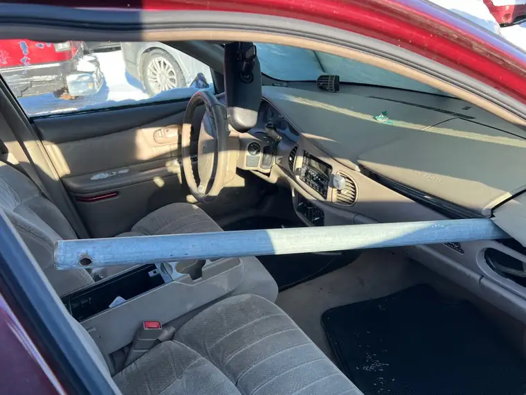
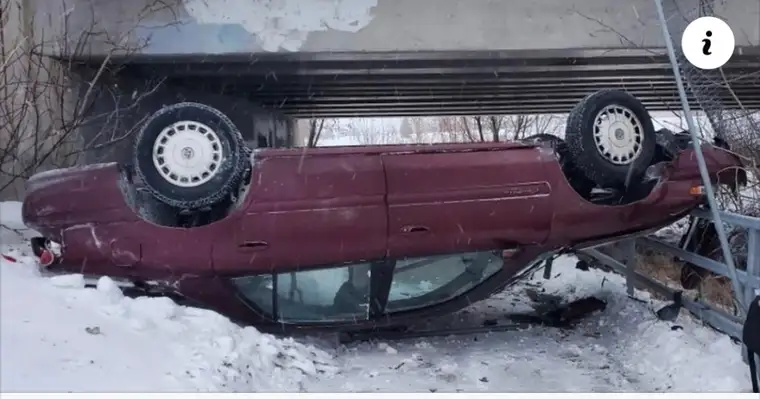

The text from my friend at 8 a.m. the morning of Dec. 6 provided the courage I’d need to face whatever lay ahead. “I was there,” she’d typed hastily. “It’s a miracle.”
She’d just witnessed our 17-year-old son’s car plunging toward the walking bridge, flipping into the air, and falling upside-down 20 feet below into the ravine near Rose Creek.

Only minutes before, he’d called me. “I think I broke my back. It really hurts!” he’d said, after telling me he’d been in a bad accident.
I rushed out the door, still in my pajamas, driving to find him. Reaching 25th Street, I saw the ambulance several blocks ahead. I’d seen many emergency vehicles before in that area near the interstate. This time, it was heading toward someone I love.
I don’t recall praying—my mind was suspended from usual responses—but I sensed God holding me as I moved along the path.
Not long before, I’d called out to our son as he got ready for school. “There’s a fresh blanket of snow this morning, so be careful.” A friend later reported black ice just underneath that white layer. Changing lanes, our son’s car had fishtailed, and as he tried gaining control, it careened off the path.

I arrived at the scene, parking behind the ambulance, the car out of sight. Inside the ambulance, I beheld my beautiful son, who was sitting up, answering questions. He seemed cognizant; nothing exterior revealed what he’d just been through.
We spent the rest of the day in the emergency room, awaiting test results. By evening, he was in a back brace to heal his fractured vertebrae, at home surrounded by his parents, two siblings and their spouses. Over pizza, we relived the harrowing experience from earlier, my husband and I muttering plentiful “thank yous” under our breath.
The next day, we saw the broken car, now aright, up close—and the fencepost that had plowed, from the front, through the passenger’s side.

Had he been just inches closer…
The dictionary defines “miracle” as “an event that appears inexplicable by the laws of nature and so is held to be supernatural in origin or an act of God.” Assessing all the known details of those terrifying moments, we cannot come to another conclusion than that God, and perhaps an army of angels, cupped the car as it went down. Both front and rear were cushioned by snow and a fence. Without that, the contents—our son included—would have been crushed.

“Sometimes you’re farther than the moon. Sometimes you’re closer than my skin,” Martin Smith sings of God in his song, “Obsession.” Hearing our son’s footsteps in the bedroom above ours now, we are reminded of how very near to his skin God was that day, and all days.
“Glory to God in the highest, and peace to his people on earth.”
Our son’s life didn’t make our 2022 Christmas gift wish-list, but it’s the only present we need. Praise you, merciful Father.
(A short story on the accident appeared soon after it happened on Dec. 6, 2022: https://www.valleynewslive.com/2022/12/06/car-rolls-off-bridge-south-fargo/?)
[For the sake of having a repository for my newspaper columns and articles, I reprint them here, with permission, a week after their run date. The preceding ran in The Forum newspaper on Dec. 19, 2022.]